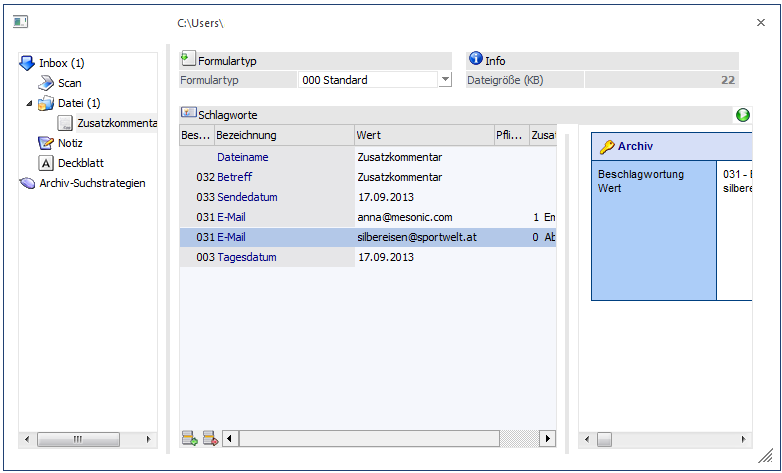

Wählt man eine E-Mail aus und klickt auf den Button "WinLine Archiv", wird die Mail an WinLine in das Programm "Neuer Archiveintrag" übergeben und kann dort beschlagwortet werden.
Die Beschlagwortungen "031 - E-Mail", "032 - Betreff" und "033 - Sendedatum" werden hierbei automatisch gefüllt.
Hinweis
Wenn aufgrund der E-Mailadresse in WinLine ein Ansprechpartner (ein Kontakt) bzw. ein Personenkonto gefunden wird, werden diese Daten auch vorbelegt.
